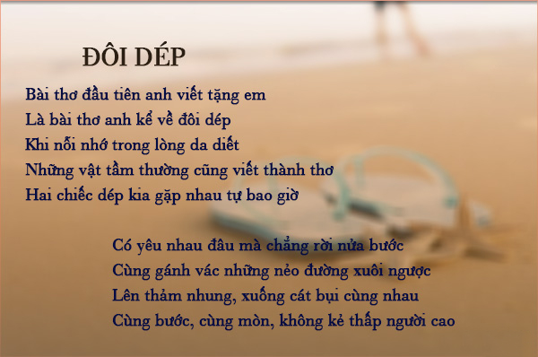

CÁC THỂ THƠ HAY
Thơ là gì
Thơ là hình thức nghệ thuật dùng từ trong ngôn ngữ làm chất liệu và sự chọn lọc từ cũng như tổ hợp của chúng được sắp xếp dưới hình thức lôgíc nhất định tạo nên hình ảnh hay gợi cảm âm thanh có tính thẩm mỹ cho người đọc, người nghe. Từ thơ thường được đi kèm với từ câu để chỉ một câu thơ, hay với từ bài để chỉ một bài thơ. Một câu thơ là một hình thức câu cô đọng, truyền đạt một hoặc nhiều hình ảnh, có ý nghĩa cho người đọc, và hoàn chỉnh trong cấu trúc ngữ pháp. Một câu thơ có thể đứng nguyên một mình. Một bài thơ là tổ hợp của các câu thơ. Tính cô đọng trong số lượng từ, tính tượng hình và dư âm thanh nhạc trong thơ biến nó thành một hình thức nghệ thuật độc đáo, tách biệt hẳn khỏi các hình thức nghệ thuật khác.

Thơ có lịch sử lâu dài. Định nghĩa sớm nhất ở châu Âu về thơ có thể bắt đầu từ nhà triết học người Hy-Lạp Aristotle (384–322 TCN). Ở Việt Nam, thơ có thể bắt nguồn từ tục ngữ, ca dao mà ra. Những câu có vần điệu, dễ nhớ như Sấm bên đông, động bên tây vốn là những kinh nghiệm được đúc kết thông qua sự từng trải, sự quan sát các hiện tượng thiên nhiên, mà đúc kết lại, truyền từ đời nọ sang đời kia, giống như một thứ mật mã trong ngôn ngữ để truyền thông tin vậy. Những đúc kết bao gồm đủ mọi mặt trong cuộc sống, sau này khi được biến thành những câu ca dao, câu vè, chúng trở thành hình thức văn nghệ, giải trí.
Thông qua giao lưu giữa các nền văn hóa, các thể loại thơ được tăng dần. Từ những cấu trúc đơn giản đến những cấu trúc phức tạp. Những xu hướng gần đây cho thấy, cấu trúc không còn là yếu tố quan trọng trong thơ. Trong các thể loại thơ ở Việt Nam, ta có thể kể đến vài loại như lục bát, song thất lục bát, các thể loại thơ Đường luật như thất ngôn bát cú, thất ngôn tứ tuyệt, ngũ ngôn bát cú rồi đến các loại thơ mới và thơ tự do. Ngoại trừ thơ tự do, một hình thức hầu như không có một cấu trúc rõ rệt, các loại thơ khác hầu như đều có cấu trúc nhất định. Chặt chẽ nhất có thể là các loại thơ Đường, trong đó cấu trúc về nội dung, luật về số chữ trong câu, số câu trong bài, về cách gieo vần quyết định thể loại của bài thơ. Sự khắt khe trong cấu trúc làm cho thơ Đường trở nên gần như một hình loại văn học chỉ dành riêng cho các tầng lớp trung lưu trở lên, là những người có giáo dục đường hoàng. Chính vì sự khắt khe này, thơ Đường hiện nay dần dần bị phai nhạt và hầu như không còn ai để ý đến nữa.
Hiện nay, thơ trở thành hình thức nghệ thuật hầu như ai cũng biết đến. Không ai đã từng thông qua quá trình giáo dục mà không biết vài câu thơ. Thơ còn trở nên hình thức để bày tỏ tâm tư và chứa đựng tính sáng tạo của con người. Có thể nói, sự tồn tại của thơ đi song song với sự tồn tại của ngôn ngữ. Còn ngôn ngữ tức là còn thơ.